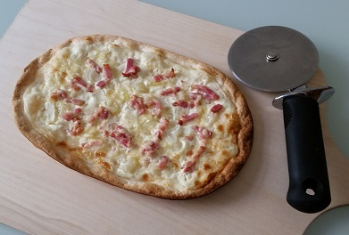

Flammkuchen

Description
The best food there is!
Ingredients
- 200g Flour
- 1Tsp Salt
- 1Tbsp Oil
- 110ml Water
- 200g Sour cream
- Salt and Pepper
- Nutmeg
- 2 Onions
- 100g Bacon bits or strips
- 50g Grated cheese
Steps
- Combine Flour, Salt, Oil and Water. Knead dough until it no longer sticks to your hands, otherwise add a little more flour
- Let dough rest for 30 Minutes
- Stir sour cream until smooth and season with salt, pepper and nutmeg
- Preheat oven to 200°C (top/bottom heat).
- Roll out dough thinly with a rolling pin one a flat surface and place it on a backing tray. Spread with sour cream and scatter the onion, cheese and bacon.
- Bake for 20 minutes.